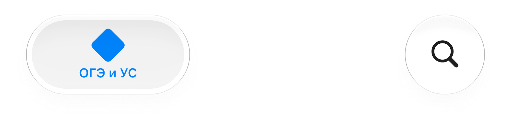

<!DOCTYPE html>
<html lang="ru">
<head>
    <meta charset="UTF-8">
    <meta name="viewport" content="width=device-width, initial-scale=1.0">
    <title>Пустая страница с шоурмой внизу</title>
    <!-- Подключение шрифта Inter Regular -->
    <link rel="preconnect" href="https://fonts.googleapis.com">
    <link rel="preconnect" href="https://fonts.gstatic.com" crossorigin>
    <link href="https://fonts.googleapis.com/css2?family=Inter:wght@400&display=swap" rel="stylesheet">
    <style>
        /* Сброс отступов и установка 100% высоты */
        * {
            margin: 0;
            padding: 0;
            box-sizing: border-box;
        }

        html, body {
            height: 100%;
            width: 100%;
        }

        body {
            font-family: 'Inter', sans-serif;
            font-weight: 400;        /* Regular */
            background-color: #ffffff; /* Белый фон */
            display: flex;
            flex-direction: column;
        }

        /* Основной контент — пустая белая область, занимает всё свободное место */
        .content {
            flex: 1 0 auto;
            background-color: #ffffff;
            /* Можно добавить что-то для наглядности, но страница остаётся пустой */
        }

        /* Контейнер для картинки — приклеен к низу, на всю ширину */
        .footer-image {
            flex-shrink: 0;           /* не сжимается */
            width: 100%;
            line-height: 0;           /* убирает лишний отступ под картинкой */
            background-color: #ffffff; /* белый фон на случай прозрачности */
        }

        .footer-image img {
            display: block;           /* убирает небольшой отступ снизу */
            width: 100%;
            height: auto;             /* пропорционально */
            object-fit: contain;      /* сохраняет пропорции, вписывая в ширину */
            /* можно также object-fit: cover, если нужно заполнить всю ширину с обрезкой,
               но по условию "пропорционально" — оставляем contain */
        }

        /* Дополнительно: если картинка меньше ширины, она растянется до 100%,
           сохраняя пропорции. Высота подстроится автоматически */
    </style>
</head>
<body>
    <!-- Пустой контент, занимает всю высоту, кроме места под картинку -->
    <div class="content"></div>

    <!-- Картинка приклеена к самому низу, на всю ширину -->
    <div class="footer-image">
        
    </div>
</body>
</html>
